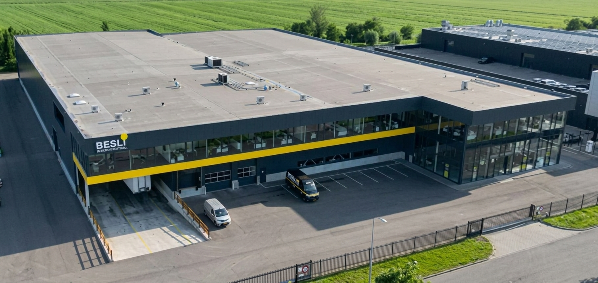
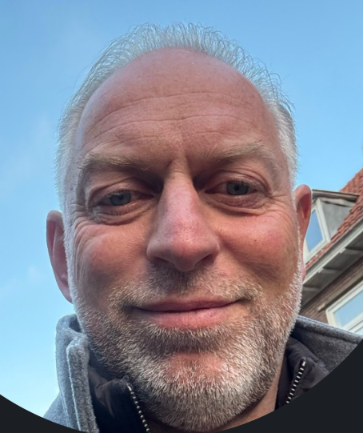
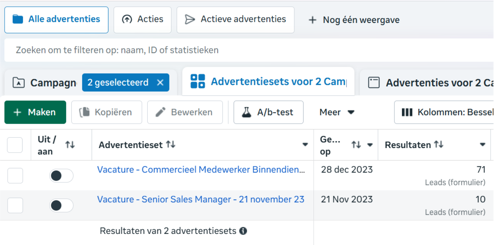
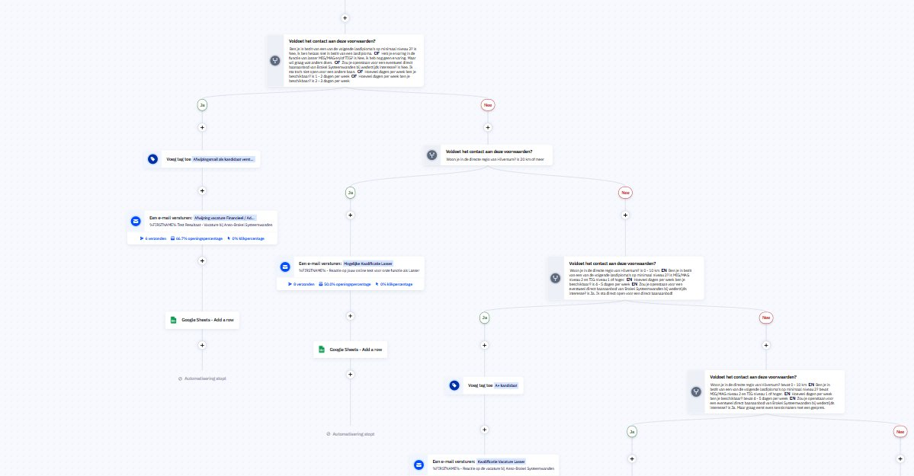

Voor de gerenommeerde regionale groothandel voor elektrotechnische materialen ontstond de vacature van Teamleider Verkoop of Senior Salesmanager en meerdere vacatures voor de verkoop binnendienst.
Na betaalde pogingen gedaan te hebben op verschillende jobboards en een intern referral systeem opgezet te hebben, meldde de geschikte kandidaat zich maar niet. De AI recruitment oplossing van MMD zorgde ervoor dat binnen 5 werkdagen 10 kandidaten zich gemeld hadden, waarvan uiteindelijk de salesmanager aangenomen is — Erwin Mulder en nog 4 nieuwe collega's op de verkoop binnendienst.

"Maurice heeft op zijn effectieve manier via social media contact met mij gekregen. Na een fijn telefoongesprek ben ik bij hem op gesprek geweest en ben ik enthousiast geworden voor mijn huidige functie. Het was altijd fijn samenwerken. Maurice weet iedereen in beweging te krijgen."Erwin Mulder — Salesmanager bij Besselink Import / Export B.V. Heteren
Door de ad-hoc gecreëerde functies was snel schakelen aan de orde. Het AI recruitmentteam moest dus ook ad-hoc opgezet en getraind worden om in een zo kort mogelijke tijd een nieuw MT-lid en collega's voor de afdeling te vinden. Dit was via hun reguliere recruitment strategieën nooit gelukt, maar mijn AI recruiters vonden Erwin diezelfde week nog en nog 4 andere collega's binnen enkele weken daaropvolgend.
De Wet van Murphy. Alles viel tegelijk. De snelle groei van het bedrijf in klanten (80+ per maand), het vertrek van de salesmanager en 2 verkopers... Dit was een echte uitdaging!
De druk liep flink op binnen de afdeling verkoop binnendienst door de toenemende telefoongesprekken en vertrekkende collega's.


Hoewel we altijd maatwerk oplossingen bieden, werken we altijd aan een strategie waar we het AI recruitment team op kunnen trainen en laten focussen. Hieronder zie je de stappen die wij doorlopen om een project volledig in kaart te brengen.
Deze case van Besli laat zien dat recruitment niet langer draait om wachten op sollicitaties, maar om het pro-actief en strategisch bereiken van de juiste kandidaten. Organisaties die dat proces automatiseren, bouwen structureel een voorsprong op in de arbeidsmarkt en zijn in staat door AI recruiters direct en sneller te anticiperen op dit soort situaties.
Ontdek hoe jouw organisatie door de inzet van een AI recruitmentteam slimmer werft en de beste kandidaten bereikt en benaderd, voordat je concurrent dat doet.